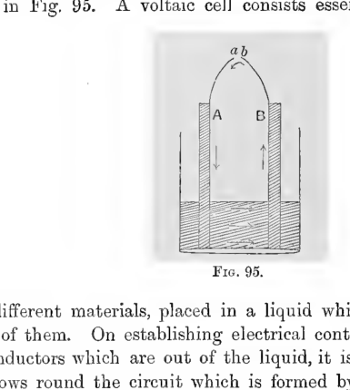
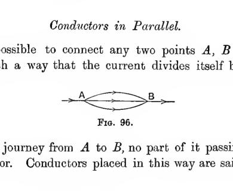
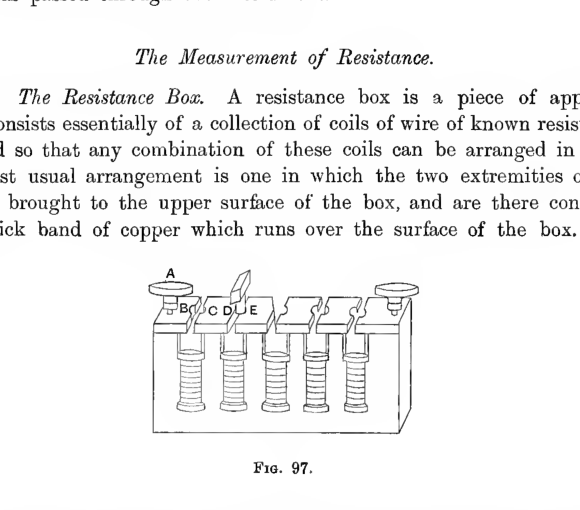
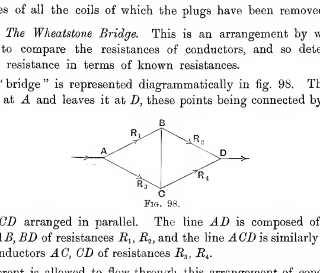
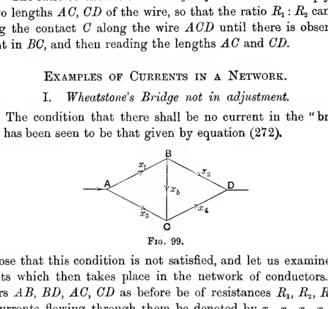
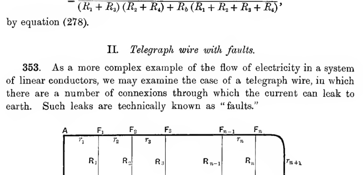

Chapter IX#
Steady Currents in Linear Conductors#
Physical Principles#
338. If two conductors charged with electricity to different potentials are connected by a conducting wire, we know that a flow of electricity will take place along the wire. This flow will tend to equalise the potentials of the two conductors, and when these potentials become equal the flow of electricity will cease. If we had some means by which the charges on the conductors could be replenished as quickly as they were carried away by conduction through the wire, then the current would never cease. The conductors would remain permanently at different potentials, and there would be a steady flow of electricity from one to the other. Means are known by which two conductors can be kept permanently at different potentials, so that a steady flow of electricity takes place through any conductor or conductors joining them. We accordingly have to discuss the mathematical theory of such currents of electricity.
We shall begin by the consideration of the flow of electricity in linear conductors, by a linear conductor being meant one which has a definite cross-section at every point. The commonest instance of a linear conductor is a wire.
339. Definition. The strength of a current at any point in a wire or other linear conductor, is measured by the number of units of electricity which flow across any cross-section of the conductor per unit time.
If the units of electricity are measured in Electrostatic Units, then the current also will be measured in Electrostatic Units. These, however, as will be explained later, are not the units in which currents are usually measured in practice.
Let \(P, Q\) be two cross-sections of a linear conductor in which a steady current is flowing, and let us suppose that no other conductors touch this conductor between \(P\) and \(Q\). Then, since the current is, by hypothesis, steady, there must be no accumulation of electricity in the region of the conductor between \(P\) and \(Q\). Hence the rate of flow into the section of the conductor across \(P\) must be exactly equal to the rate of flow out of this section across \(Q\). Or, the currents at \(P\) and \(Q\) must be equal. Hence we speak of the current in a conductor, rather than of the current at a point in a conductor. For, as we pass along a conductor, the current cannot change except at points at which the conductor is touched by other conductors.
Ohm’s Law.#
340. In a linear conductor in which a current is flowing, we have electricity in motion at every point, and hence must have a continuous variation in potential as we pass along the conductor. This is not in opposition to the result previously obtained in Electrostatics, for in the previous analysis it had to be assumed that the electricity was at rest. In the present instance, the electricity is not at rest, being in fact kept in motion by the difference of potential under discussion.
The analogy between potential and height of water will perhaps help. A lake in which the water is at rest is analogous to a conductor in which electricity is in equilibrium. The theorem that the potential is constant over a conductor in which electricity is in equilibrium, is analogous to the hydrostatic theorem that the surface of still water must all be at the same level. A conductor through which a current of electricity is flowing finds its analogue in a stream of running water. Here the level is not the same at all points of the river, it is the difference of level which causes the water to flow. The water will flow more rapidly in a river in which the gradient is large than in one in which it is small. The electrical analogy to this is expressed by Ohm’s Law.
Ohm’s Law. The difference of potential between any two points of a wire or other linear conductor in which a current is flowing, stands to the current flowing through the conductor in a constant ratio, which is called the resistance between the two points.
It is here assumed that there is no junction with other conductors between these two points, so that the current through the conductor is a definite quantity.
341. Thus if \(C\) is the current flowing between two points \(P, Q\) at which the potentials are \(V_P, V_Q\), we have
where \(R\) is the resistance between the points \(P\) and \(Q\). Very delicate experiments have failed to detect any variation in the ratio
as the current is varied, and this justifies us in speaking of the resistance as a definite quantity associated with the conductor. The resistance depends naturally on the positions of the two points by which the current enters and leaves the conductor, but when once these two points are fixed the resistance is independent of the amount of current. In general, however, the resistance of a conductor varies with the temperature, and for some substances, of which selenium is a notable example, it varies with the amount of light falling on the conductor.
The Voltaic Cell.#
342. The simplest arrangement by which a steady flow of electricity can be produced is that known as a Voltaic Cell. This is represented diagrammatically in Fig. 95. A voltaic cell consists essentially of two conductors \(A, B\) of different materials, placed in a liquid which acts chemically on at least one of them. On establishing electrical contact between the two ends of the conductors which are out of the liquid, it is found that a continuous current flows round the circuit which is formed by the two conductors and the liquid, the energy which is required to maintain the current being derived from chemical action in the cell.

Two vertical electrodes labelled \(A\) and \(B\) dip into a liquid bath, with their upper ends joined by a curved wire whose terminals are marked \(a\) and \(b\). Arrows indicate opposite directions of motion in the two branches, showing the schematic arrangement of a simple voltaic cell.
To explain the action of the cell, it will be necessary to touch on a subject of which a full account would be out of place in the present book. As an experimental fact it is found that two conductors of dissimilar material, when placed in contact, have different potentials when there is no flow of electricity from one to the other, although of course the potential over the whole of either conductor must be constant. In the light of this experimental fact, let us consider the conditions prevailing in the voltaic cell before the two ends \(a, b\) of the conductors are joined.
So long as the two conductors \(A, B\) and the liquid \(C\) do not form a closed circuit, there can be no flow of electricity. Thus there is electric equilibrium, and the three conductors have definite potentials \(V_A, V_B, V_C\). The difference of potential between the two “terminals” \(a, b\) is \(V_A - V_B\), but the peculiarity of the voltaic cell is that this difference of potential is not equal to the difference of potential between the two conductors when they are placed in contact and are in electrical equilibrium without the presence of the liquid \(C\). Thus on electrically joining the points \(a, b\) in the voltaic cell electrical equilibrium is an impossibility, and a current is established in the circuit which will continue until the physical conditions become changed or the supply of chemical energy is exhausted.
For a long time there has been a divergence of opinion as to whether this difference of potential is not due to the chemical change at the surfaces of the conductors, and therefore dependent on the presence of a layer of air or other third substance between the conductors. It seems now to be almost certain that this is the case, but the question is not one of vital importance as regards the mathematical theory of electric currents.
Electromotive Force.#
343. Let \(A, B, C\) be any three conductors arranged so as to form a closed circuit. Let \(V_{AB}\) be the contact difference of potential between \(A\) and \(B\) when there is electric equilibrium, and let \(V_{BC}, V_{CA}\) have similar meanings.
If the three substances can be placed in a closed circuit without any current flowing, then we can have equilibrium in which the three conductors will have potentials \(V_A, V_B, V_C\), such that
Thus we must have
a result known as Volta’s Law.
If, however, the three conductors form a voltaic cell, the expression on the left-hand side of the above equation does not vanish, and its value is called the electromotive force of the cell. Denoting the electromotive force by \(E\), we have
We accordingly have the following definition:
Definition. The Electromotive Force of a cell is the algebraic sum of the discontinuities of potential encountered in passing in order through the series of conductors of which the cell is composed.
Clearly an electromotive force has direction as well as magnitude. It is usual to speak of the two conductors which pass into the liquid as the high-potential terminal and the low-potential terminal, or sometimes as the positive and negative terminals. Knowing which is the positive or high-potential terminal, we shall of course know the direction of the electromotive force.
344. If the conductors \(C, A\) of a voltaic cell \(ABC\) are separated, and then joined by a fourth conductor \(D\), such that there is no chemical action between \(D\) and the conductors \(C\) or \(A\), it will easily be seen that the sum of the discontinuities in the new circuit is the same as in the old.
For by hypothesis \(CDA\) can form a closed circuit in which no chemical action can occur, and therefore in which there can be electric equilibrium. Hence we must have
Moreover the sum of all the discontinuities in the circuit is
proving the result. A similar proof shews that we may introduce any series of conductors between the two terminals of a cell, and so long as there is no chemical action in which these new conductors are involved, the sum of all the discontinuities in the circuit will be constant, and equal to the electromotive force of the cell.
Let \(ABC\ldots MN\) be any series of conductors, including a voltaic cell, and let the material of \(N\) be the same as that of \(A\). If \(N\) and \(A\) are joined we obtain a closed circuit of electromotive force \(E\), such that
Moreover \(V_{NA} = 0\), since the material of \(N\) and \(A\) is the same. Thus the relation may be rewritten as
In the open series of conductors \(ABC\ldots MN\), there can be no current, so that each conductor must be at a definite uniform potential. If we denote the potentials by \(V_A, V_B, \ldots V_M, V_N\), we have
Hence equation (267) becomes
We now see that the electromotive force of a cell is the difference of potential between the ends of the cell when the cell forms an open circuit, and the materials of the two ends are the same.
A series of cells, joined in series so that the high-potential terminal of one is in electrical contact with the low-potential terminal of the next, and so on, is called a battery of cells, or an “electric battery” arranged in series.
It will be clear from what has just been proved, that the electromotive force of such a battery of cells is equal to the sum of the electromotive forces of the separate cells of the series.
Units.#
345. On the electrostatic system, a unit current has been defined to be a current such that an electrostatic unit of electricity crosses any selected cross-section of a conductor in unit time. For practical purposes, a different unit, known as the ampere, is in use. The ampere is equal very approximately to \(3 \times 10^9\) electrostatic units of current (see below, \(\S 587\)).
To form some idea of the actual magnitude of this unit, it may be stated that the amount of current required to ring an electric bell is about half an ampere. About the same amount is required to light a 50 C.P. 100-volt metallic filament incandescent lamp.
As an electromotive force is of the same physical nature as a difference of potential, the electrostatic unit of electromotive force is taken to be the same as that of potential. The practical unit is about \(\frac{1}{300}\) of the electrostatic unit, and is known as the volt (see below, \(\S 587\)).
It may be mentioned that the electromotive force of a single voltaic cell is generally intermediate between one and two volts; the electromotive force which produces a perceptible shock in the human body is about 30 volts, while an electromotive force of 500 volts or more is dangerous to life. Both of these latter quantities, however, vary enormously with the condition of the body, and particularly with the state of dryness or moisture of the skin. The electromotive force used to work an electric bell is commonly 6 or 8 volts, while an electric light installation will generally have a voltage of about 100 or 200 volts.
The unit of resistance, in all systems of units, is taken to be a resistance such that unit difference of potential between its extremities produces unit current through the conductor. We then have, by Ohm’s Law,
In the practical system of units, the unit of resistance is called the ohm. From what has already been said, it follows that when two points having a potential-difference of one volt are connected by a resistance of one ohm, the current flowing through this resistance will be one ampere. In this case the difference of potential is \(\frac{1}{300}\) electrostatic units, and the current is \(3 \times 10^9\) electrostatic units, so that by relation (268), it follows that one ohm must be equal to
electrostatic units of resistance (see below, \(\S 587\)).
Some idea of the amount of this unit may be gathered from the statement that the resistance of a mile of ordinary telegraph wire is about 10 ohms. The resistance of a good telegraph insulator may be billions of ohms.
Physical Theories of Conduction.#
Electron-theory of conduction.#
345 a. As has been already explained (\(\S 28\)), the modern view of electricity regards a current of electricity as a material flow of electric charges. In all conductors except a small class known as electrolytic conductors (see below, \(\S 345 b\)), these charged bodies are believed to be identical with the electrons.
In a solid some of the electrons are supposed to be permanently bound to particular atoms or molecules, whilst others, spoken of as “free” electrons, move about in the interstices of the solid, continually having their courses changed by collisions with the molecules. Both kinds of electrons will be influenced by the presence of an electric field. It is probable that the restricted motions of the “bound” electrons account for the phenomenon of inductive capacity (\(\S 151\)) whilst the unrestricted motion of the free electrons explains the phenomenon of electric conductivity.
Even when no electric forces are applied, the free electrons move about through a solid, but they move at random in all directions, so that as many electrons move from right to left as from left to right and the resultant current is nil. If an electric force is applied to the conductor, each electron has superposed on to its random motion a motion impressed on it by the electric force, and the electrons as a whole are driven through the conductor by the continued action of the electric force. If it were not for their collisions with the molecules of the conductor, the electrons would gain indefinitely in momentum under the action of the impressed electric force, but the effect of collisions is continually to check this growth of momentum.
Let us suppose that there are \(N\) electrons per unit length of the conductor, and that at any moment these have an average forward velocity \(u\) through the material of the conductor. If \(m\) is the mass of each electron, the total momentum of the moving electrons will be \(Nmu\). The rate at which this total momentum is checked by collisions will be proportional to \(N\) and to \(u\), and may be taken to be \(N\gamma u\). The rate at which the momentum is increased by the electric forces acting is \(NXe\), where \(X\) is the electric intensity and \(e\) is the charge, measured positively, of each electron. Thus we have the equation
In unit time the number of electrons which pass any fixed point in the conductor is \(Nu\), so that the total flow of electricity per unit time past any point is \(Neu\). This is by definition equal to the current in the conductor, so that if we call this \(i\), we have
This enables us to reduce equation (a) to the form
The equation shews that if a steady electric force is applied, such that the intensity at any point is \(X\), the current will not increase indefinitely but will remain stationary after it has reached a value \(i\) given by
If \(V\) is the potential at any point of a conducting wire, and if \(s\) is a coordinate measured along the wire, we have \(X = -\frac{\partial V}{\partial s}\), so that
Integrating between any two points \(P\) and \(Q\) of the conductor, we have
This is the electron-theory interpretation of equation (264), and explains how the truth of Ohm’s Law is involved in the modern conception of the nature of an electric current. It will be noticed that on this view of the matter, Ohm’s Law is only true for steady currents.
We notice that the resistance of the conductor, on this theory, is \(\gamma/Ne^2\) per unit length. Thus, generally speaking, bodies in which there are many free electrons ought to be good conductors, and conversely.
Taking the charge on the electron to be \(4.5 \times 10^{-10}\) electrostatic units, we may notice that a current of one ampere (\(3 \times 10^9\) electrostatic units of current) is one in which \(66 \times 10^{18}\) electrons pass any given point of the conductor every second. Consider a conductor in which the number of free electrons per cubic centimetre is \(10^{21}\) (cf. \(\S 613 b\), below). Then in a wire of 1 square mm. cross-section there are \(10^{19}\) electrons per unit length, so that the average velocity of these when the wire is conveying a current of 1 ampere is of the order of one cm. per sec. This average velocity is superposed on to a random velocity which is known to be of the order of magnitude of \(10^7\) cms. per sec., so that the additional velocity produced by even a strong current is only very slight in comparison with the normal velocity of agitation of the electrons.
Electrolytic conduction.#
345 b. Besides the type of electric conduction just explained, there is a second, and entirely different type, known as Electrolytic conduction, the distinguishing characteristic of which is that the passage of a current is accompanied by chemical change in the conductor.
For instance, if a current is passed through a solution of potassium chloride in water, it will be found that some of the salt is divided up by the passage of the current into its chemical constituents, and that the potassium appears solely at the point at which the current leaves the liquid, while the chlorine similarly appears at the point at which the current enters. It thus appears that during the passage of an electric current, there is an actual transport of matter through the liquid, chlorine moving in one direction and potassium in the other. It is moreover found by experiment that the total amount, whether of potassium or chlorine, which is liberated by any current is exactly proportional to the amount of electricity which has flowed through the electrolyte.
These and other facts suggested to Faraday the explanation, now universally accepted, that the carriers of the current are identical with the matter which is transported through the electrolyte. For instance, in the foregoing illustration, each atom of potassium carries a positive charge to the point where the current leaves the liquid, while each atom of chlorine, moving in the direction opposite to that of the current, carries a negative charge. The process is perhaps explained more clearly by regarding the total current as made up of two parts, first a positive current and second a negative current flowing in the reverse direction. Then the atoms of chlorine are the carriers of the negative current, and the atoms of potassium are the carriers of the positive current.
Electrolytes may be solid, liquid, or gaseous, but in most cases of importance they are liquids, being solutions of salts or acids. The two parts into which the molecule of the electrolyte is divided are called the ions (\(i\omega\nu\)), that which carries the positive current being called the positive ion, and the other being called the negative ion. The point at which the current enters the electrolyte is called the anode, the point at which it leaves is called the cathode. The two ions are also called the anion or cation according as they give up their charges at the anode or cathode respectively. Thus we have
The anion carries \(-\) charge against current, and delivers it at the anode,
The cation carries \(+\) charge with current, and delivers it at the cathode.
When potassium chloride is the electrolyte, the potassium atom is the cation, and the chlorine atom is the anion. If experiments are performed with different chlorides (say of potassium, sodium, and lithium), it will be found that the amount of chlorine liberated by a given current is in every case the same, while the amounts of potassium, sodium, or lithium, being exactly those required to combine with this fixed amount of chlorine, are necessarily proportional to their atomic weights. This suggests that each atom of chlorine, no matter what the electrolyte may be in which it occurs, always carries the same negative charge, say \(-e\), while each atom of sodium, or lithium carries the same positive charge, say \(+E\). Moreover \(E\) and \(e\) must be equal, or else each undissociated molecule of the electrolyte would have to be supposed to carry a charge \(E-e\), whereas its charge is known to be nil.
It is found to be a general rule that every anion which is chemically monovalent carries the same charge \(-e\), while every monovalent cation carries a charge \(+e\). Moreover divalent ions carry charges \(\pm 2e\), trivalent ions carry charges \(\pm 3e\), and so on.
As regards the actual charges carried, it is found that one ampere of current flowing for one second through a salt of silver liberates 0.001118 grammes of silver. Silver is monovalent and its atomic weight is 107.92 (referred to \(O = 16\)), so that the amount of any other monovalent element of atomic weight \(m\) deposited by the same current will be \(0.00001036 \times m\) grammes. It follows that the passage of one electrostatic unit of electricity will result in the liberation of
or \(3.45 \times 10^{-15} \times m\) grammes of the substance.
We can calculate from these data how many ions are deposited by one unit of current, and hence the amount of charge carried by each ion. It is found that, to within the limits of experimental error, the negative charge carried by each monovalent anion is exactly equal to the charge carried by the electron. It follows that each monovalent anion has associated with it one electron in excess of the number required to give it zero charge, while each monovalent cation has a deficiency of one electron; divalent ions have an excess or deficiency of two electrons, and so on.
345 c. Ohm’s Law appears, in general, to be strictly true for the resistance of electrolytes. In the light of the explanation of Ohm’s Law given in \(\S 345 a\), this will be seen to suggest that the ions are free to move as soon as an electric intensity, no matter how small, begins to act on them. They must therefore be already in a state of dissociation; no part of the electric intensity is required to effect the separation of the molecule into ions.
Other facts confirm this conclusion, such as for instance the fact that various physical properties, electric conductivity, colour, optical rotatory power, etc., are additive in the sense that the amount possessed by the whole electrolyte is the sum of the amounts known to be possessed by the separate ions.
We may therefore suppose that as soon as an electric force begins to act, all the positive ions begin to move in the direction of the electric force, while all the negative ions begin to move in the opposite direction. Let us suppose the average velocities of the positive and negative ions to be \(u, v\) respectively, and let us suppose that there are \(N\) of each per unit length of the electrolyte measured along the path of the current. Then across any cross-section of the electrolyte there pass in unit time \(Nu\) positive ions each carrying a charge \(se\) in the direction in which the current is measured, and \(Nv\) negative ions each carrying a charge \(-se\) in the reverse direction, \(s\) being the valency of each ion. It follows that the total current is given by
Each unit of time \(Nu\) positive ions cross a cross-section close to the anode, having started from positions between this cross-section and the anode. Thus each unit of time \(Nu\) molecules are separated in the neighbourhood of the anode, and similarly \(Nv\) molecules are separated in the neighbourhood of the cathode. The concentration of the salt is accordingly weakened both at the anode and at the cathode, and the ratio of the amounts of these weakenings is that of \(u : v\). This provides a method of determining the ratio of \(u : v\).
Also equation (d) provides a method of determining \(u + v\), for \(i\) can be readily measured, and \(Nse\) is the total charge which must be passed through the electrolyte to liberate the ions in unit length, and this can be easily determined.
Knowing \(u + v\) and the ratio \(u : v\), it is possible to determine \(u\) and \(v\). The following table gives results of the experiments of Kohlrausch on three chlorides of alkali metals, for different concentrations, the current in each case being such as to give a potential fall of 1 volt per centimetre.
Concentration |
Potassium chloride \(u\) |
Potassium chloride \(v\) |
Sodium chloride \(u\) |
Sodium chloride \(v\) |
Lithium chloride \(u\) |
Lithium chloride \(v\) |
|---|---|---|---|---|---|---|
0 |
660 |
690 |
450 |
690 |
360 |
690 |
.0001 |
654 |
681 |
448 |
681 |
356 |
681 |
.001 |
643 |
670 |
440 |
670 |
343 |
670 |
.01 |
619 |
644 |
415 |
644 |
318 |
644 |
.03 |
597 |
621 |
390 |
623 |
298 |
619 |
.1 |
564 |
589 |
360 |
592 |
259 |
594 |
[The unit in every case is a velocity of \(10^{-6}\) cms. per second.]
We notice that when the solution is weak, the velocity of the chlorine ion is the same, no matter which electrolyte it has originated in. This gives, perhaps, the best evidence possible that the conductivity of the electrolyte is the sum of the conductivities of the chlorine and of the metal separately.
By arranging for the ions to produce discoloration of the electrolyte as they move through it, Lodge, Whetham and others have been able to observe the velocity of motion of the ions directly, and in all cases the observed velocities have agreed, within the limits of experimental error, with the theoretically determined values.
Conduction through gases.#
345 d. In a gas in its normal state, an electric current cannot be carried in either of the ways which are possible in a solid or a liquid, and it is consequently found that a gas under ordinary conditions conducts electricity only in a very feeble degree. If however Roentgen rays are passed through the gas, or ultra-violet light of very short wave-length, or a stream of the rays from radium or one of the radio-active metals, then it is found that the gas acquires considerable conducting powers, for a time at least. For this kind of conduction it is found that Ohm’s Law is not obeyed, the relation between the current and the potential-gradient being an extremely complex one.
The complicated phenomena of conduction through gases can all be explained on the hypothesis that the gas is conducting only when “ionised,” and the function of the Roentgen rays, ultra-violet light, etc. is supposed to be that of dividing up some of the molecules into their component ions. The subject of conduction through gases is too extensive to be treated here. In what follows it is assumed that the conductors under discussion are not gases, so that Ohm’s Law will be assumed to be obeyed throughout.
Kirchhoff’s Laws.#
346. Problems occur in which the flow of electricity is not through a single continuous series of conductors: there may be junctions of three or more conductors at which the current of electricity is free to distribute itself between different paths, and it may be important to determine how the electricity will pass through a network of conductors containing junctions.
The first principle to be used is that, since the currents are supposed steady, there can be no accumulation of electricity at any point, so that the sum of all the currents which enter any junction must be equal to the sum of all the currents which leave it. Or, if we introduce the convention that currents flowing into a junction are to be counted as positive, while those leaving it are to be reckoned negative, then we may state the principle in the form:
The algebraic sum of the currents at any junction must be zero.
From this law it follows that any network of currents, no matter how complicated, can be regarded as made up of a number of closed currents, each of uniform strength throughout its length. In some conductors, two or more of these currents may of course be superposed.
Let the various junctions be denoted by \(A, B, C, \ldots\), and let their potentials be \(V_A, V_B, V_C, \ldots\). Let \(R_{AB}\) be the resistance of any single conductor connecting two junctions \(A\) and \(B\), and let \(C_{AB}\) be the current flowing through it from \(A\) to \(B\). Let us select any path through the network of conductors, such as to start from a junction and bring us back to the starting point, say \(ABC\ldots NA\). Then on applying Ohm’s Law to the separate conductors of which this path is formed, we obtain (\(\S 341\))
By addition we obtain
where the summation is taken over all the conductors which form the closed circuit.
In this investigation it has been assumed that there are no discontinuities of potential, and therefore no batteries, in the selected circuit. If discontinuities occur, a slight modification will have to be made. We shall treat points at which discontinuities occur as junctions, and if \(A\) is a junction of this kind, the potentials at \(A\) on the two sides of the surface of separation between the two conductors will be denoted by \(V_A\) and \(V_A'\). Then, by Ohm’s Law, we obtain for the falls of potential in the different conductors of the circuit,
and by addition of these equations
The left-hand member is simply the sum of all the discontinuities of potential met in passing round the circuit, each being measured with its proper sign. It is therefore equal to the sum of the electromotive forces of all the batteries in the circuit, these also being measured with their proper signs.
Thus we may write
where the summation in each term is taken round any closed circuit of conductors, and this equation, together with
in which the summation now refers to all the currents entering or leaving a single junction, suffices to determine the current in each conductor of the network.
Equation (271) expresses what is known as Kirchhoff’s First Law, while equation (270) expresses the Second Law.
Conductors in Series.#
347. When all the conductors form a single closed circuit, the current through each conductor is the same, say \(C\), so that equation (270) becomes
The sum \(\Sigma R\) is spoken of as the “resistance of the circuit,” so that the current in the circuit is equal to the total electromotive force divided by the total resistance. Conductors arranged in such a way that the whole current passes through each of them in succession are said to be arranged “in series.”
Conductors in Parallel.#
348. It is possible to connect any two points \(A, B\) by a number of conductors in such a way that the current divides itself between all these conductors on its journey from \(A\) to \(B\), no part of it passing through more than one conductor. Conductors placed in this way are said to be arranged “in parallel.”

Two points labelled \(A\) and \(B\) are connected by three parallel conducting paths, with arrows showing current splitting at \(A\) and recombining at \(B\). The sketch illustrates the idea of conductors arranged in parallel between the same two terminals.
Let us suppose that the two points \(A, B\) are connected by a number of conductors arranged in parallel. Let \(R_1, R_2, \ldots\) be the resistances of the conductors, and \(C_1, C_2, \ldots\) the currents flowing through them. Then if \(V_A, V_B\) are the potentials at \(A\) and \(B\), we have, by Ohm’s Law,
The total current which enters at \(A\) is \(C_1 + C_2 + \cdots\), say \(C\). Thus we have
The arrangement of conductors in parallel is therefore seen to offer the same resistance to the current as a single conductor of resistance
The reciprocal of the resistance of a conductor is called the “conductivity” of the conductor. The conductivity of the system of conductors arranged in parallel is \(\frac{1}{R_1} + \frac{1}{R_2} + \cdots\), and is therefore equal to the sum of the conductivities of the separate conductors. Also we have seen that the current divides itself between the different conductors in the ratio of their conductivities.
Measurements.#
The Measurement of Current.#
349. The instrument used for measuring the current passing in a circuit at any given instant is called a galvanometer. The theory of this instrument will be given in a later chapter (Chap. xiii).
For measuring the total quantity of electricity passing within a given time an instrument called a voltameter is sometimes used. The current, in passing through the voltameter, encounters a number of discontinuities of potential in crossing which electrical energy becomes transformed into chemical energy. Thus a voltameter is practically a voltaic cell run backwards. On measuring the amount of chemical energy which has been stored in the voltameter, we obtain a measure of the total quantity of electricity which has passed through the instrument.
The Measurement of Resistance.#
350. The Resistance Box. A resistance box is a piece of apparatus which consists essentially of a collection of coils of wire of known resistances, arranged so that any combination of these coils can be arranged in series. The most usual arrangement is one in which the two extremities of each coil are brought to the upper surface of the box, and are there connected to a thick band of copper which runs over the surface of the box. This band of copper is continuous, except between the two terminals of each coil, and in these places the copper is cut away in such a way that a copper plug can be made to fit exactly into the gap, and so put the two sides of the gap in electrical contact through the plug. The arrangement is shown diagrammatically in fig. 97. When the plug is inserted in any gap \(DE\), the plug and the coil beneath the gap \(DE\) form two conductors in parallel connecting the points \(D\) and \(E\). Denoting the resistances of the coil and plug by \(R_c, R_p\), the resistance between \(D\) and \(E\) will be
and since \(R_p\) is very small, this may be neglected. When the plug is removed, the resistance from \(D\) to \(E\) may be taken to be the resistance of the coil. Thus the resistance of the whole box will be the sum of the resistances of all the coils of which the plugs have been removed.

A resistance box is drawn with several upright wire coils mounted inside a rectangular case and a row of brass blocks with removable plugs across the top. The labelled terminals and plug gaps show how different known resistances can be inserted into the circuit by withdrawing plugs.
351. The Wheatstone Bridge. This is an arrangement by which it is possible to compare the resistances of conductors, and so determine an unknown resistance in terms of known resistances.
The “bridge” is represented diagrammatically in fig. 98. The current enters it at \(A\) and leaves it at \(D\), these points being connected by the lines \(ABD, ACD\) arranged in parallel. The line \(AD\) is composed of two conductors \(AB, BD\) of resistances \(R_1, R_2\), and the line \(ACD\) is similarly composed of two conductors \(AC, CD\) of resistances \(R_3, R_4\).

Four resistive arms form a diamond-shaped bridge between entry point \(A\) and exit point \(D\), with upper junction \(B\) and lower junction \(C\). The arms are labelled \(R_1\), \(R_2\), \(R_3\), and \(R_4\), showing the standard Wheatstone bridge arrangement.
If current is allowed to flow through this arrangement of conductors, it will not in general happen that the points \(B\) and \(C\) will be at the same potential, so that if \(B\) and \(C\) are connected by a new conductor, there will usually be a current flowing through \(BC\). The method of using the Wheatstone bridge consists in varying the resistances of one or more of the conductors \(R_1, R_2, R_3, R_4\) until no current flows through the conductor \(BC\).
When the bridge is adjusted in this way, the points \(B, C\) must be at the same potential, say \(v\). Let \(V_A, V_D\) denote the potentials at \(A\) and \(D\), and let the current through \(ABD\) be \(C\). Then, by Ohm’s Law,
so that
From a similar consideration of the flow in \(ACD\), we obtain
so that we must have
as the condition to be satisfied between the resistances when there is no current in \(BC\).
Clearly by adjusting the bridge in this way we can determine an unknown resistance \(R_1\) in terms of known resistances \(R_2, R_3, R_4\). In the simplest form of Wheatstone’s bridge, the line \(ACD\) is a single uniform wire, and the position of the point \(C\) can be varied by moving a “sliding contact” along the wire. The ratio of the resistances \(R_3 : R_4\) is in this case simply the ratio of the two lengths \(AC, CD\) of the wire, so that the ratio \(R_1 : R_2\) can be found by sliding the contact \(C\) along the wire \(ACD\) until there is observed to be no current in \(BC\), and then reading the lengths \(AC\) and \(CD\).
Flow of Currents in a Network.#
I. Wheatstone’s Bridge not in adjustment.#
352. The condition that there shall be no current in the “bridge” \(BC\) in fig. 98 has been seen to be that given by equation (272).

The same bridge network is shown with currents marked along all five branches: \(x_1\) and \(x_2\) on the upper arms, \(x_3\) and \(x_4\) on the lower arms, and \(x_b\) down the central bridge. The diagram sets up the current-balance equations for an unadjusted Wheatstone bridge.
Suppose that this condition is not satisfied, and let us examine the flow of currents which then takes place in the network of conductors. Let the conductors \(AB, BD, AC, CD\) as before be of resistances \(R_1, R_2, R_3, R_4\), and let the currents flowing through them be denoted by \(x_1, x_2, x_3, x_4\). Let the bridge \(BC\) be of resistance \(R_b\), and let the current flowing through it from \(B\) to \(C\) be \(x_b\).
From Kirchhoff’s Laws, we obtain the following equations:
(Law I, point \(B\)) $\(x_1 - x_2 - x_b = 0 \tag{273}\)$
(Law I, point \(C\)) $\(x_3 - x_4 + x_b = 0 \tag{274}\)$
(Law II, circuit \(ABC\)) $\(x_1 R_1 + x_b R_b - x_3 R_3 = 0 \tag{275}\)$
(Law II, circuit \(BCD\)) $\(x_b R_b + x_4 R_4 - x_2 R_2 = 0 \tag{276}\)$
These four equations enable us to determine the ratios of the five currents \(x_1, x_2, x_3, x_4, x_b\). We may begin by eliminating \(x_2\) and \(x_4\) from equations (273), (274) and (276), and obtain
and from this and equation (275),
The ratios of the other currents can be written down from symmetry.
If the total current entering at \(A\) is denoted by \(X\), we have \(X = x_1 + x_3\). Thus if each of the fractions of equations (277) is denoted by \(\theta\),
and this gives \(\theta\), and hence the actual values of the currents, in terms of the total current entering at \(A\).
The fall of potential from \(A\) to \(D\) is given by
and from equations (277) this is found to reduce to
where
so that \(\lambda\) is the sum of the products of the five resistances taken three at a time, omitting the two products of the three resistances which meet at the points \(B\) and \(C\).
There is now a current \(X\) flowing through the network, and having a fall of potential \(V_A - V_D\). Hence the equivalent resistance of the network is
by equation (278).
II. Telegraph wire with faults.#
353. As a more complex example of the flow of electricity in a system of linear conductors, we may examine the case of a telegraph wire, in which there are a number of connexions through which the current can leak to earth. Such leaks are technically known as “faults.”

A long telegraph line runs from \(A\) to \(B\) with intermediate fault points \(F_1, F_2, F_3, \ldots, F_n\) dropping to earth through vertical leakage resistances \(R_1, R_2, R_3, \ldots, R_n\). The horizontal sections between faults are labelled \(r_1, r_2, r_3, \ldots, r_{n+1}\), showing the ladder-network model of leakage along a telegraph wire.
Let \(AB\) be the wire, and let \(F_1, F_2, \ldots F_{n-1}, F_n\) be the points on it at which faults occur, the resistances through these faults being \(R_1, R_2, \ldots R_{n-1}, R_n\), and the resistances of the sections \(AF_1, F_1 F_2, \ldots F_{n-1} F_n\) and \(F_n B\) being \(r_1, r_2, \ldots r_n, r_{n+1}\). Let the end \(B\) be supposed put to earth, and let the current be supposed to be generated by a battery of which one terminal is connected to \(A\) while the other end is to earth.
The equivalent resistance of the whole network of conductors from \(A\) to earth can be found in a very simple way. Current arriving at \(F_n\) from the section \(F_{n-1} F_n\) passes to earth through two conductors arranged in parallel, of which the resistances are \(R_n\) and \(r_{n+1}\). Hence the resistance from \(F_n\) to earth is
and the resistance from \(F_{n-1}\) to earth, through \(F_n\), is
Current reaching \(F_{n-1}\) can, however, pass to earth by two paths, either through the fault at \(F_{n-1}\), or past \(F_n\). These paths may be regarded as arranged in parallel, their resistances being \(R_{n-1}\) and expression (279) respectively. Thus the equivalent resistance from \(F_{n-1}\) is
or, written as a continued fraction,
We can continue in this way, until finally we find as the whole resistance from \(A\) to earth,
If the currents or potentials are required, it will be found best to attack the problem in a different manner.
Let \(V_A, V_1, V_2, \ldots\) be the potentials at the points \(A, F_1, F_2, \ldots\), then, by Ohm’s Law,
Hence, by Kirchhoff’s first law,
or
and from this and the system of similar equations, the potentials may be found.
If all the \(R\)’s are the same, and also all the \(r\)’s are the same the equation reduces to a difference equation with constant coefficients. These conditions might arise approximately if the line were supported by a series of similar imperfect insulators at equal distances apart. The difference equation is in this case seen to be
and if we put
the solution is known to be
in which \(A\) and \(B\) are constants which must be determined from the conditions at the ends of the line. For instance to express that the end \(B\) is to earth, we have \(V_{n+1} = 0\), and therefore
III. Submarine cable imperfectly insulated.#
354. If we pass to the limiting case of an infinite number of faults, we have the analysis appropriate to a line from which there is leakage at every point. The conditions now contemplated may be supposed to be realised in a submarine cable in which, owing to the imperfection of the insulating sheath, the current leaks through to the sea at every point.
The problem in this form can also be attacked by the methods of the infinitesimal calculus. Let \(V\) be the potential at a distance \(x\) along the cable, \(V\) now being regarded as a continuous function of \(x\). Let the resistance of the cable be supposed to be \(R\) per unit length, then the resistance from \(x\) to \(x + dx\) will be \(Rdx\). The resistance of the insulation from \(x\) to \(x + dx\), being inversely proportional to \(dx\), may be supposed to be \(\frac{S}{dx}\).
Let \(C\) be the current in the cable at the point \(x\), so that the leak from the cable between the points \(x\) and \(x + dx\) is \(-\frac{dC}{dx} dx\). This leak is a current which flows through a resistance \(\frac{S}{dx}\) with a fall of potential \(V\). Hence by Ohm’s Law,
or
Also, the fall of potential along the cable from \(x\) to \(x + dx\) is \(-\frac{dV}{dx} dx\), the current is \(C\), and the resistance is \(Rdx\). Hence by Ohm’s Law,
Eliminating \(C\) from equations (281) and (282), we find as the differential equation satisfied by \(V\),
If \(R\) and \(S\) have the same values at all points of the cable, the solution of this equation is
which is easily seen to be the limiting form assumed by equation (280).
Generation of Heat in Conductors.#
The Joule Effect.#
355. Let \(P, Q\) be any two points in a linear conductor, let \(V_P, V_Q\) be the potentials at these points, \(R\) the resistance between them, and \(x\) the current flowing from \(P\) to \(Q\). Then, by Ohm’s Law,
In moving a single unit of electricity from \(Q\) to \(P\) an amount of work is done against the electric field equal to \(V_P - V_Q\). Hence when a unit of electricity passes from \(P\) to \(Q\), there is work done on it by the electric field of amount \(V_P - V_Q\). The energy represented by the work shews itself in a heating of the conductor.
The electron theory gives a simple explanation of the mechanism of this transformation of energy. The electric forces do work on the electrons in driving them through the field. The total kinetic energy of the electrons can, as we have seen (§ 345 a), be regarded as made up of two parts, the energy of random motion and the energy of forward motion. The work done by the electric field goes directly towards increasing this second part of the kinetic energy of the electrons. But after a number of collisions the direction of the velocity of forward motion is completely changed, and the energy of this motion has become indistinguishable from the energy of the random motion of the electrons. Thus the collisions are continually transforming forward motion into random motion, or what is the same thing, into heat.
We are supposing that \(x\) units of electricity pass per unit time from \(P\) to \(Q\). Hence the work done by the electric field per unit time within the region \(PQ\) is \(x(V_P - V_Q)\), and this again, by equation (283), is equal to \(Rx^2\).
Thus in unit time, the heat generated in the section \(PQ\) of the conductor represents \(Rx^2\) units of mechanical energy. Each unit of energy is equal to \(\frac{1}{J}\) units of heat, where \(J\) is the “mechanical equivalent of heat.” Thus the number of heat-units developed in unit time in the conductor \(PQ\) will be
It is important to notice that in this formula \(x\) and \(R\) are measured in electrostatic units. If the values of the resistance and current are given in practical units, we must transform to electrostatic units before using formula (284).
Let the resistance of a conductor be \(R'\) ohms, and let the current flowing through it be \(x'\) amperes. Then, in electrostatic units, the values of the resistance \(R\) and the current \(x\) are given by
Thus the number of heat-units produced per unit time is
and on substituting for \(J\) its value \(4.2 \times 10^7\) in c.g.s.-centigrade units, this becomes
Generation of Heat a minimum.#
356. In general the solution of any physical problem is arrived at by the solution of a system of equations, the number of these equations being equal to the number of unknown quantities in the problem. The condition that any function in which these unknown quantities enter as variables shall be a maximum or a minimum, is also arrived at by the solution of an equal number of equations. If it is possible to discover a function of the unknown quantities such that the two systems of equations become identical, i.e. if the equations which express that the function is a maximum or a minimum are the same as those which contain the solution of the physical problem, then we may say that the solution of the problem is contained in the single statement that the function in question is a maximum or a minimum.
Examples of functions which serve this purpose are not hard to find. In § 189, we proved that when an electrostatic system is in equilibrium, its potential energy is a minimum. Thus the solution of any electrostatic problem is contained in the single statement that the function which expresses the potential energy is a minimum. Again, the solution of any dynamical problem is contained in the statement that the “action” is a minimum, while in thermodynamics the equilibrium state of any system can be expressed by the condition that the “entropy” shall be a maximum. It will now be shewn that the function which expresses the total rate of generation of heat plays a similar role in the theory of steady electric currents.
357. THEOREM. When a steady current flows through a network of conductors in which no discontinuities of potential occur (and which, therefore, contains no batteries), the currents are distributed in such a way that the rate of generation of heat in the network is a minimum, subject only to the conditions imposed by Kirchhoff’s first law; and conversely.
To prove this, let us select any closed circuit \(PQR \ldots P\) in the network, and let the currents and resistances in the sections \(PQ, QR, \ldots\) be \(x_1, x_2, \ldots\) and \(R_1, R_2, \ldots\). Let the currents and resistances in those sections of the network which are not included in this closed circuit be denoted by \(x_a, x_b, \ldots\) and \(R_a, R_b, \ldots\). Then the total rate of production of heat is
A different arrangement of currents, and one moreover which does not violate Kirchhoff’s first law, can be obtained in imagination by supposing all the currents in the circuit \(PQR \ldots P\) increased by the same amount \(e\). The total rate of production of heat is now
and this exceeds the actual rate of production of heat, as given by expression (285), by
Now if the original distribution of currents is that which actually occurs in nature, then
by Kirchhoff’s second law. Thus the rate of production of heat, under the new imaginary distribution of currents, exceeds that in the actual distribution by \(e^2 \Sigma R_1\), an essentially positive quantity.
The most general alteration which can be supposed made to the original system of currents, consistently with Kirchhoff’s first law remaining satisfied, will consist in superposing upon this system a number of currents flowing in closed circuits in the network. One such current is typified by the current \(e\), already discussed. If we have any number of such currents, the resulting increase in the rate of heat-production
where \(e, e', e'', \ldots\) are the additional currents flowing through the resistance \(R_1\). As before this expression
by Kirchhoff’s second law. This is an essentially positive quantity, so that any alteration in the distribution of the currents increases the rate of heat-production. In other words, the original distribution was that in which the rate was a minimum.
To prove the converse it is sufficient to notice that if the rate of heat-production is given to be a minimum, then expression (286) must vanish as far as the first power of \(e\), so that we have
and of course similar equations for all other possible closed circuits. These, however, are known to be the equations which determine the actual distribution.
358. THEOREM. When a system of steady currents flows through a network of conductors of resistances \(R_1, R_2, \ldots\), containing batteries of electromotive forces \(E_1, E_2, \ldots\), the currents \(x_1, x_2, \ldots\) are distributed in such a way that the function
is a minimum, subject to the conditions imposed by Kirchhoff’s first law; and conversely.
As before, we can imagine the most general variation possible to consist of the superposition of small currents \(e, e', e'', \ldots\) flowing in closed circuits. The increase in the function (287) produced by this variation is
If the system of currents \(x, x', \ldots\) is the natural system, then the first line of this expression vanishes by Kirchhoff’s second law (cf. equations (270)), and the increase in heat-production is the essentially positive quantity
shewing that the original value of function (287) must have been a minimum.
Conversely, if the original value of function (287) was given to be a minimum, then expression (288) must vanish as far as first powers of \(e, e', \ldots\), so that we must have
shewing that the currents \(x, x', \ldots\) must be the natural system of currents.
359. THEOREM. If two points \(A, B\) are connected by a network of conductors, a decrease in the resistance of any one of these conductors will decrease (or, in special cases, leave unaltered) the equivalent resistance from \(A\) to \(B\).
Let \(x\) be the current flowing from \(A\) to \(B\), \(R\) the equivalent resistance of the network, and \(V_A - V_B\) the fall of potential. The generation of heat per unit time represents the energy set free by \(x\) units moving through a potential-difference \(V_A - V_B\). Thus the rate of generation of heat is
or, since \(V_A - V_B = Rx\), the rate of generation of heat will be \(Rx^2\).
Let the resistance of any single conductor in the network be supposed decreased from \(R_1\) to \(R_1'\), and let \(x_1\) be the current originally flowing through the network. If we imagine the currents to remain unaltered in spite of the change in the resistance of this conductor, then there will be a decrease in the rate of heat-production equal to \((R_1 - R_1')x_1^2\). The currents now flowing are not the natural currents, but if we allow the current entering the network to distribute itself in the natural way, there is, by § 357, a further decrease in the rate of heat-production. Thus a decrease in the resistance of the single conductor has resulted in a decrease in the natural rate of heat-production.
If \(R, R'\) are the equivalent resistances before and after the change, the two rates of heat-production are \(Rx^2\) and \(R'x^2\). We have proved that \(R'x^2 < Rx^2\), so that \(R' < R\), proving the theorem.
General Theory of a Network.#
360. In addition to depending on the resistances of the conductors, the flow of currents through a network depends on the order in which the conductors are connected together, but not on the geometrical shapes, positions or distances of the conductors. Thus we can obtain the most general case of flow through any network by considering a number of points \(1, 2, \ldots, n\), connected in pairs by conductors of general resistances which may be denoted by \(R_{12}, R_{23}, \ldots\). If, in any special problem, any two points \(P, Q\) are not joined by a conductor, we must simply suppose \(R_{PQ}\) to be infinite. Discontinuities of potential must not be excluded, so we shall suppose that in passing through the conductor \(PQ\), we pass over discontinuities of algebraic sum \(E_{PQ}\). This is the same as supposing that there are batteries in the arm \(PQ\) of total electromotive force \(E_{PQ}\). We shall suppose that the current flowing in \(PQ\) from \(P\) to \(Q\) is \(x_{PQ}\), and shall denote the potentials at the points \(1, 2, \ldots\) by \(V_1, V_2, \ldots\).
The total fall of potential from \(P\) to \(Q\) is \(V_P - V_Q\), but of this an amount \(-E_{PQ}\) is contributed by discontinuities, so that the aggregate fall from \(P\) to \(Q\) which arises from the steady potential gradient in conductors will be
Hence, by Ohm’s Law,
If we introduce a symbol \(K_{PQ}\) to denote the conductivity \(\frac{1}{R_{PQ}}\), we have the current given by
Suppose that currents \(X_1, X_2, \ldots\) enter the system from outside at the points \(1, 2, \ldots\), then we must have
since there is to be no accumulation of electricity at the point \(1\), and so on for the points \(2, 3, \ldots\). Substituting from equations (289) into the right hand of this equation,
The symbol \(K_{PP}\) has so far had no meaning assigned to it. Let us use it to denote \(-(K_{P1} + K_{P2} + K_{P3} + \cdots)\); then equation (290) may be written in the more concise form
There are \(n\) equations of this type, but it is easily seen that they are not all independent. For if we add corresponding members we obtain
The first term on the right vanishes on account of the meaning which has been assigned to \(K_{11}\), etc.; while the second term vanishes because \(E_{PQ} = -E_{QP}\), while \(K_{PQ} = K_{QP}\). Thus the equation reduces to
which simply expresses that the total flow into the network is equal to the total flow out of it, a condition which must be satisfied by \(X_1, X_2, \ldots X_n\) at the outset. Thus we arrive at the conclusion that the equations of system (291) are not independent.
This is as it should be, for if the equations were independent, we should have \(n\) equations from which it would be possible to determine the values of \(V_1, V_2, \ldots\) in terms of \(X_1, X_2, \ldots\); whereas clearly from a knowledge of the currents entering the network, we must be able to determine differences of potential only, and not absolute values.
To the right-hand side of equation (291), let us add the expression
of which the value is zero by the definition of \(K_{11}\). The equation becomes
There are \(n\) equations of this type in all. Of these the first \((n - 1)\) may be regarded as a system of equations determining
That these equations are independent will be seen a posteriori from the fact that they enable us to determine the values of the \(n - 1\) independent quantities
Solving these equations, we have
If we denote the determinant in the denominator of the foregoing equation by \(\Delta\), and the minor of the term \(K_{PQ}\) by \(\Delta_{PQ}\), we find that the value of \(V_1 - V_n\) can be expressed in the form
361. Suppose first that the whole system of currents in the network is produced by a current \(X\) entering at \(P\) and leaving at \(Q\), there being no batteries in the network. Then all the \(E\)’s vanish, and all the \(X\)’s vanish except \(X_P\) and \(X_Q\), these being given by
Equation (292) now becomes
so that
Replacing \(1, 2\) by \(P, Q\) and \(P, Q\) by \(1, 2\), we find that if a current \(X\) enters the network at \(1\) and leaves it at \(2\), the fall of potential from \(P\) to \(Q\) is
and since \(\Delta_{rs} = \Delta_{sr}\), it is clear that the right-hand members of equations (293) and (294) are identical.
From this we have the theorem:
The potential-fall from \(A\) to \(B\) when unit current traverses the network from \(C\) to \(D\) is the same as the potential-fall from \(C\) to \(D\) when unit current traverses the network from \(A\) to \(B\).
362. Let it now be supposed that the whole flow of current in the network is produced by a battery of electromotive force \(E\) placed in the conductor \(PQ\). We now take all the \(X\)’s equal to zero in equation (292) and all the \(E\)’s equal to zero except \(E_{PQ}\) which we put equal to \(E\), and \(E_{QP}\) which we put equal to \(-E\). We then have
Hence
and, by equation (289), the current flowing in the arm \(12\) is
This expression remains unaltered if we replace \(1, 2\) by \(P, Q\) and \(P, Q\) by \(1, 2\). From this we deduce the theorem:
The current which flows from \(A\) to \(B\) when an electromotive force \(E\) is introduced into the arm \(CD\) of the network, is equal to the current which flows from \(C\) to \(D\) when the same electromotive force is introduced into the arm \(AB\).
Conjugate Conductors.#
363. The same expression occurs as a factor in the right-hand members of each of the equations (293), (294), (295), and (296), namely,
If this expression vanishes, the two conductors \(12\) and \(PQ\) are said to be “conjugate.”
By examining the form assumed by equations (293) to (296), when expression (297) vanishes, we obtain the following theorems.
THEOREM I. If the conductors \(AB\) and \(CD\) are conjugate, a current entering at \(A\) and leaving at \(B\) will produce no current in \(CD\). Similarly, a current entering at \(C\) and leaving at \(D\) will produce no current in \(AB\).
THEOREM II. If the conductors \(AB\) and \(CD\) are conjugate, a battery introduced into the arm \(AB\) produces no current in \(CD\). Similarly, a battery introduced into the arm \(CD\) produces no current in \(AB\).
As an illustration of two conductors which are conjugate, it may be noticed that when the Wheatstone’s Bridge (§ 352) is in adjustment, the conductors \(AD\) and \(BC\) are conjugate.
Equations expressed in Symmetrical Form.#
364. The determinant \(\Delta\) is not in form a symmetrical function of the points \(1, 2, \ldots, n\), so that equations and conditions which must necessarily involve these \(n\) points symmetrically have not yet been expressed in symmetrical form.
We have, for instance,
in which the points which enter unsymmetrically are not only \(1\) and \(3\), but also \(n\). Similarly, we have
so that, on subtraction,
From the relation
it follows that the sum of all the terms in the first row of the above determinant is equal to \(-K_{2,n}\), the sum of all the terms in the second row is equal to \(-K_{3,n}\), and so on. Thus the equation may be replaced by
and similarly,
These two determinants differ only in their first row, so that on subtraction,
the last transformation being effected by the use of relation (298).
The relation which has now been obtained is in a symmetrical shape. If \(D\) is a symmetrical determinant given by
then the determinant on the right-hand of equation (299) is obtained from \(D\) by striking out the lines and columns which contain the terms \(K_{13}\) and \(K_{24}\). Thus equation (299) may be written in the form
Again the determinant \(\Delta\) given by
may be written in the form
This is not of symmetrical form, for the point \(n\) enters unsymmetrically. We can, however, easily shew that the value of \(\Delta\) is symmetrical, although its form is unsymmetrical.
By application of relation (298), we can transform equation (300) into
Thus \(\Delta\) is the differential coefficient of \(D\) with respect to either \(K_{11}\) or \(K_{n,n}\), or of course with respect to any other one of the terms in the leading diagonal of \(D\). Thus, if \(K\) denote any term in the leading diagonal of \(D\), we have
and this virtually expresses \(\Delta\) in a symmetrical form.
We can now express in symmetrical form the relations which have been obtained in §§ 360 to 362, as follows:
I. (§ 362.) The conductors \(1, 2\) and \(P, Q\) will be conjugate if
II. (Equation 293.) If the conductors \(1, 2\) and \(P, Q\) are not conjugate, a current \(X\) entering at \(P\) and leaving at \(Q\) produces in \(1, 2\) a fall of potential given by
III. (Equation 295.) If the conductors \(1, 2\) and \(P, Q\) are not conjugate, a battery of electromotive force \(E\) placed in the arm \(PQ\) produces in \(1, 2\) a fall of potential given by
and a current from \(1\) to \(2\) given by
All these results and formulae obtain illustration in the results already obtained for the Wheatstone’s Bridge in §§ 351 and 352.
Slowly-varying Currents.#
365. All the analysis of the present chapter has proceeded upon the assumption that the currents are absolutely steady, shewing no variation with the time. Changes in the strength of electric currents are in general accompanied by a series of phenomena, which may be spoken of as “induction phenomena,” of which the discussion is beyond the scope of the present chapter. If, however, the rate of change of the strength of the currents is very small, the importance of the induction phenomena also becomes very small, so that if the variation of the currents is slow, the analysis of the present chapter will give a close approximation to the truth. This method of dealing with slowly-varying currents will be illustrated by two examples.
I. Discharge of a Condenser through a high Resistance.#
366. Let the two plates \(A, B\) of a condenser of capacity \(C\) be connected by a conductor of high resistance \(R\), and let the condenser be discharged by leakage through this conductor. At any instant let the potentials of the two plates be \(V_A, V_B\), so that the charges on these plates will be \(\pm C(V_A - V_B)\). Let \(i\) be the current in the conductor, measured in the direction from \(A\) to \(B\).
Then, by Ohm’s Law,
whence we find that the charges on plates \(A\) and \(B\) are respectively \(+CRi\) and \(-CRi\). Since \(i\) units leave plate \(A\) per unit time, we must have
a differential equation of which the solution is
where \(i_0\) is the current at time \(t = 0\). The condition that the strength of the current shall only vary slowly is now seen a posteriori to be that \(CR\) shall be large.
At time \(t\) the charge on the plate \(A\) is \(CRi\) or
This may be written as
where \(Q_0\) is the charge at time \(t = 0\). Thus both the charge and the current are seen to fall off exponentially with the time, both having the same modulus of decay \(CR\).
Later (§ 516) we shall examine the same problem but without the limitation that the current only varies slowly.
II. Transmission of Signals along a Cable.#
367. It has already been mentioned that a cable acts as an electrostatic condenser of considerable capacity. This fact retards the transmission of signals, and in a cable of high-capacity, the rate of transmission may be so slow that the analysis of the present chapter can be used without serious error.
Let \(x\) be a coordinate which measures distances along the cable, let \(V, i\) be the potential at \(x\) and the current in the direction of \(x\)-increasing, and let \(K\) and \(R\) be the capacity and resistance of the cable per unit length, these latter quantities being supposed independent of \(x\).
The section of the cable between points \(A\) and \(B\) at distances \(x\) and \(x + dx\) is a condenser of capacity \(Kdx\), and is at the same time a conductor of resistance \(R \, dx\). The potential of the condenser is \(V\), so that its charge is \(VK \, dx\). The fall of potential in the conductor is
so that by Ohm’s Law,
The current enters the section \(AB\) at a rate \(i\) units per unit time, and leaves at a rate \(i + \frac{\partial i}{\partial x} dx\) units per unit time. Hence the charge in this section decreases at a rate \(\frac{\partial i}{\partial x} dx\) per unit time, so that we must have
Eliminating \(i\) from equations (301) and (302), we obtain
368. This equation, being a partial differential equation of the second order, must have two arbitrary functions in its complete solution. We shall shew, however, that there is a particular solution in which \(V\) is a function of the single variable \(x/\sqrt{t}\), and this solution will be found to give us all the information we require.
Let us introduce the new variable \(u\), given by \(u = x/\sqrt{t}\), and let us assume provisionally that there is a solution \(V\) of equation (303) which is a function of \(u\) only. For this solution we must have
so that equation (303) becomes
The fact that this equation involves \(V\) and \(u\) only, shews that there is an integral of the original equation for which \(V\) is a function of \(u\) only. This integral is easily obtained, for equation (304) can be put in the form
whence
in which \(C\) is a constant of integration.
Integrating this, we find that the solution for \(V\) is
in which the lower limit to the integral is a second constant of integration. Introducing a new variable \(y\) such that \(y^2 = \frac{1}{4} KRu^2\), and changing the constants of integration, we may write the solution in the form
369. We must remember that this is not the general solution of equation (303), but is simply one particular solution. Thus the solution cannot be adjusted to satisfy any initial and boundary conditions we please, but will represent only the solution corresponding to one definite set of initial and boundary conditions. We now proceed to examine what these conditions are.
At time \(t = 0\), the value of \(x/\sqrt{t}\) is infinite except at the point \(x = 0\). Thus except at this point, we have \(V = V_0\) when \(t = 0\). At this point the value of \(x/\sqrt{t}\) is indeterminate at the actual instant \(t = 0\), but immediately after this instant assumes the value zero, which it retains through all time. Thus at \(x = 0\), the potential has the constant value
or, say, \(V = V_1\), where \(C' = \frac{2(V_0 - V_1)}{\sqrt{\pi}}\).
At \(x = \infty\), the value of \(V\) is \(V = V_0\) through all time. Thus equation (305) expresses the solution for a line of infinite length which is initially at potential \(V = V_0\), and of which the end \(x = \infty\) remains at this potential all the time, while the end \(x = 0\) is raised to potential \(V_1\) by being suddenly connected to a battery-terminal at the instant \(t = 0\).
The current at any instant is given by
from equation (301),
from equation (305),
We see that the current vanishes only when \(t = 0\) and when \(t = \infty\). Thus even within an infinitesimal time of making contact, there will, according to equation (306), be a current at all points along the wire. It must, however, be remembered that equation (306) is only an approximation, holding solely for slowly-varying currents, so that we must not apply the solution at the instant \(t = 0\) at which the currents, as given by equation (306), vary with infinite rapidity. For larger values of \(t\), however, we may suppose the current given by equation (306).
The maximum current at any point is found, on differentiating equation (306), to occur at the instant given by
so that the further along the wire we go, the longer it takes for the current to attain its maximum value. The maximum value of this current, when it occurs, is
and so is proportional to \(\frac{1}{x}\). Thus the further we go from the end \(x = 0\), the smaller the maximum current will be.
We notice that \(K\) occurs in expression (307) but not in (308). Thus the electrostatic capacity of a cable will not interfere with the strength of signals sent along a cable, but will interfere with the rapidity of their transmission.
References.#
On experimental knowledge of the Electric Current:
Encyc. Brit. 11th Ed. Art. Conduction, Electric. Vol. vi. p. 855.
Whetham. Experimental Electricity. (Camb. Univ. Press, 1905.) Chaps. v and x.
On currents in a network of linear conductors:
Maxwell. Electricity and Magnetism, Vol. i, Part ii, Chap. vi.
On the transmission of signals:
Lord Kelvin. “On the Theory of the Electric Telegraph,” Proc. Roy. Soc., 1855; Math. and Phys. Papers, ii, p. 61.
Examples.#
1. A length \(4a\) of uniform wire is bent into the form of a square, and the opposite angular points are joined with straight pieces of the same wire, which are in contact at their intersection. A given current enters at the intersection of the diagonals and leaves at an angular point: find the current strength in the various parts of the network, and shew that its whole resistance is equal to that of a length
of the wire.
2. A network is formed of uniform wire in the shape of a rectangle of sides \(2a\), \(3a\), with parallel wires arranged so as to divide the internal space into six squares of sides \(a\), the contact at points of intersection being perfect. Shew that if a current enter the framework by one corner and leave it by the opposite, the resistance is equivalent to that of a length \(121a/69\) of the wire.
3. A fault of given earth-resistance develops in a telegraph line. Prove that the current at the receiving end, generated by an assigned battery at the signalling end, is least when the fault is at the middle of the line.
4. The resistances of three wires \(BC\), \(CA\), \(AB\), of the same uniform section and material, are \(a\), \(b\), \(c\) respectively. Another wire from \(A\) of constant resistance \(d\) can make a sliding contact with \(BC\). If a current enter at \(A\) and leave at the point of contact with \(BC\), shew that the maximum resistance of the network is
and determine the least resistance.
5. A certain kind of cell has a resistance of \(10\) ohms and an electromotive force of \(\cdot 85\) of a volt. Shew that the greatest current which can be produced in a wire whose resistance is \(22\cdot 5\) ohms, by a battery of five such cells arranged in a single series, of which any element is either one cell or a set of cells in parallel, is exactly \(\cdot 06\) of an ampere.
6. Six points \(A\), \(A'\), \(B\), \(B'\), \(C\), \(C''\) are connected to one another by copper wire whose lengths in yards are as follows: \(AA' = 16\), \(BC = B'C' = 1\), \(BC' = B'C'' = 2\), \(AB = A'B' = 6\), \(AC' = A'C'' = 8\). Also \(B\) and \(B'\) are joined by wires, each a yard in length, to the terminals of a battery whose internal resistance is equal to that of \(r\) yards of the wire, and all the wires are of the same thickness. Shew that the current in the wire \(AA'\) is equal to that which the battery would maintain in a simple circuit consisting of \(31r + 104\) yards of the wire.
7. Two places \(A\), \(B\) are connected by a telegraph line of which the end at \(A\) is connected to one terminal of a battery, and the end at \(B\) to one terminal of a receiver, the other terminals of the battery and receiver being connected to earth. At a point \(C\) of the line a fault is developed, of which the resistance is \(r\). If the resistances of \(AC\), \(CB\) be \(p\), \(q\) respectively, shew that the current in the receiver is diminished in the ratio
the resistances of the battery, receiver and earth circuit being neglected.
8. Two cells of electromotive forces \(e_1\), \(e_2\) and resistances \(r_1\), \(r_2\) are connected in parallel to the ends of a wire of resistance \(R\). Shew that the current in the wire is
and find the rates at which the cells are working.
9. A network of conductors is in the form of a tetrahedron \(PQRS\); there is a battery of electromotive force \(E\) in \(PQ\), and the resistance of \(PQ\), including the battery, is \(R\). If the resistances in \(QR\), \(PR\) are each equal to \(r\), and the resistances in \(PS\), \(RS\) are each equal to \(\frac{1}{3}r\), and that in \(QS = \frac{2}{3}r\), find the current in each branch.
10. \(A\), \(B\), \(C\), \(D\) are the four junction points of a Wheatstone’s Bridge, and the resistances \(c\), \(\beta\), \(b\), \(\gamma\) in \(AB\), \(BD\), \(AC\), \(CD\) respectively are such that the battery sends no current through the galvanometer in \(BC\). If now a new battery of electromotive force \(E\) be introduced into the galvanometer circuit, and so raise the total resistance in that circuit to \(\alpha\), find the current that will flow through the galvanometer.
11. A cable \(AB\), \(50\) miles in length, is known to have one fault, and it is necessary to localise it. If the end \(A\) is attached to a battery, and has its potential maintained at \(200\) volts, while the other end \(B\) is insulated, it is found that the potential of \(B\) when steady is \(40\) volts. Similarly when \(A\) is insulated the potential to which \(B\) must be raised to give \(A\) a steady potential of \(40\) volts is \(300\) volts. Shew that the distance of the fault from \(A\) is \(19\cdot 05\) miles.
12. A wire is interpolated in a circuit of given resistance and electromotive force. Find the resistance of the interpolated wire in order that the rate of generation of heat may be a maximum.
13. The resistances of the opposite sides of a Wheatstone’s Bridge are \(a\), \(a'\) and \(b\), \(b'\) respectively. Shew that when the two diagonals which contain the battery and galvanometer are interchanged,
where \(C\) and \(C'\) are the currents through the galvanometer in the two cases, \(G\) and \(R\) are the resistances of the galvanometer and battery conductors, and \(E\) the electromotive force of the battery.
14. A current \(C\) is introduced into a network of linear conductors at \(A\), and taken out at \(B\), the heat generated being \(H_1\). If the network be closed by joining \(A\), \(B\) by a resistance \(r\) in which an electromotive force \(E\) is inserted, the heat generated is \(H_2\). Prove that
15. A number \(N\) of incandescent lamps, each of resistance \(r\), are fed by a machine of resistance \(R\) (including the leads). If the light emitted by any lamp is proportional to the square of the heat produced, prove that the most economical way of arranging the lamps is to place them in parallel arc, each arc containing \(n\) lamps, where \(n\) is the integer nearest to \(\sqrt{NR/r}\).
16. A battery of electromotive force \(E\) and of resistance \(B\) is connected with the two terminals of two wires arranged in parallel. The first wire includes a voltameter which contains discontinuities of potential such that a unit current passing through it for a unit time does \(p\) units of work. The resistance of the first wire, including the voltameter, is \(R\): that of the second is \(r\). Shew that if \(E\) is greater than \(p(B+r)/r\), the current through the battery is
17. A system of \(30\) conductors of equal resistance are connected in the same way as the edges of a dodecahedron. Shew that the resistance of the network between a pair of opposite corners is \(\frac{7}{6}\) of the resistance of a single conductor.
18. In a network \(PA\), \(PB\), \(PC\), \(PD\), \(AB\), \(BC\), \(CD\), \(DA\), the resistances are \(\alpha\), \(\beta\), \(\gamma\), \(\delta\), \(\gamma+\delta\), \(\delta+\alpha\), \(\alpha+\beta\), \(\beta+\gamma\) respectively. Shew that, if \(AD\) contains a battery of electromotive force \(E\), the current in \(BC\) is
where
19. A wire forms a regular hexagon and the angular points are joined to the centre by wires each of which has a resistance \(\frac{1}{n}\) of the resistance of a side of the hexagon. Shew that the resistance to a current entering at one angular point of the hexagon and leaving it by the opposite point is
times the resistance of a side of the hexagon.
20. Two long equal parallel wires \(AB\), \(A'B'\), of length \(l\), have their ends \(B\), \(B'\) joined by a wire of negligible resistance, while \(A\), \(A'\) are joined to the poles of a cell whose resistance is equal to that of a length \(r\) of the wire. A similar cell is placed as a bridge across the wires at a distance \(x\) from \(A\), \(A'\). Shew that the effect of the second cell is to increase the current in \(BB'\) in the ratio
21. There are \(n\) points \(1\), \(2\), \(\ldots\), \(n\), joined in pairs by linear conductors. On introducing a current \(C\) at electrode \(1\) and taking it out at \(2\), the potentials of these are \(V_1\), \(V_2\), \(\ldots\), \(V_n\). If \(x_{12}\) is the actual current in the direction \(12\), and \(x'_{12}\) any other that merely satisfies the conditions of introduction at \(1\) and abstraction at \(2\), shew that
and interpret the result physically.
If \(x\) typify the actual current when the current enters at \(1\) and leaves at \(2\), and \(y\) typify the actual current when the current enters at \(3\) and leaves at \(4\), shew that
where the \(X\)’s are potentials corresponding to currents \(x\), and the \(Y\)’s are potentials corresponding to currents \(y\).
22. \(A\), \(B\), \(C\) are three stations on the same telegraph wire. An operator at \(A\) knows that there is a fault between \(A\) and \(B\), and observes that the current at \(A\) when he uses a given battery is \(i\), \(i'\) or \(i''\), according as \(B\) is insulated and \(C\) to earth, \(B\) to earth, or \(B\) and \(C\) both insulated. Shew that the distance of the fault from \(A\) is
where
23. Six conductors join four points \(A\), \(B\), \(C\), \(D\) in pairs, and have resistances \(a\), \(u\), \(b\), \(\beta\), \(c\), \(\gamma\), where \(a\), \(u\) refer to \(BC\), \(AD\) respectively, and so on. If this network be used as a resistance coil, with \(A\), \(B\) as electrodes, shew that the resistance cannot lie outside the limits
and
24. Two equal straight pieces of wire \(A_0A_n\), \(B_0B_n\) are each divided into \(n\) equal parts at the points \(A_1 \ldots A_{n-1}\) and \(B_1 \ldots B_{n-1}\) respectively, the resistance of each part and that of \(A_nB_n\) being \(R\). The corresponding points of each wire from \(1\) to \(n\) inclusive are joined by cross wires, and a battery is placed in \(A_0B_0\). Shew that, if the current through each cross wire is the same, the resistance of the cross wire \(A_sB_s\) is
25. If \(n\) points are joined two and two by wires of equal resistance \(r\), and two of them are connected to the electrodes of a battery of electromotive force \(E\) and resistance \(R\), shew that the current in the wire joining the two points is
26. Six points \(A\), \(B\), \(C\), \(D\), \(P\), \(Q\) are joined by nine conductors \(AB\), \(AP\), \(BC\), \(BQ\), \(PQ\), \(QC\), \(PD\), \(DC\), \(AD\). An electromotive force is inserted in the conductor \(AD\), and a galvanometer in \(PQ\). Denoting the resistance of any conductor \(XY\) by \(r_{XY}\), shew that if no current passes through the galvanometer,
27. A network is made by joining the five points \(1\), \(2\), \(3\), \(4\), \(5\) by conductors in every possible way. Shew that the condition that conductors \(23\) and \(14\) are conjugate is
where \(K_{rs}\) is conductivity of conductor \(rs\).
28. Two endless wires are each divided into \(mn\) equal parts by the successive terminals of \(mn\) connecting wires, the resistance of each part being \(R\). There is an identically similar battery in every \(m\)th connecting wire, the total resistance of each being the same, and the resistance of each of the other \(mn-n\) connecting wires is \(h\). Prove that the current through a connecting wire which is the \(r\)th from the nearest battery is
where \(C\) is the current through each battery, and \(\sin 2a = h/(h+R)\).
29. A long line of telegraph wire \(AA_1A_2\ldots A_nA_{n+1}\) is supported by \(n\) equidistant insulators at \(A_1\), \(A_2\), \(\ldots A_n\). The end \(A\) is connected to one pole of a battery of electromotive force \(E\) and resistance \(B\), and the other pole of this battery is put to earth, as also the other end \(A_{n+1}\) of the wire. The resistance of each portion \(AA_1\), \(A_1A_2\), \(\ldots A_nA_{n+1}\) is the same, \(R\). In wet weather there is a leakage to earth at each insulator, whose resistance may be taken equal to \(r\). Shew that the current strength in \(A_pA_{p+1}\) is
where
30. A regular polygon \(A_1A_2\ldots A_n\) is formed of \(n\) pieces of uniform wire, each of resistance \(\sigma\), and the centre \(O\) is joined to each angular point by a straight piece of the same wire. Shew that, if the point \(O\) is maintained at zero potential, and the point \(A_1\) at potential \(V\), the current that flows in the conductor \(A_rA_{r+1}\) is
where \(a\) is given by the equation
31. A resistance network is constructed of \(2n\) rectangular meshes forming a truncated cylinder of \(2n\) faces, with two ends each in the form of a regular polygon of \(2n\) sides. Each of these sides is of resistance \(r\), and the other edges of resistance \(R\). If the electrodes be two opposite corners, then the resistance is
where
32. A network is formed by a system of conductors joining every pair of a set of \(n\) points, the resistances of the conductors being all equal, and there is an electromotive force in the conductor joining the points \(A_1\), \(A_2\). Shew that there is no current in any conductor except those which pass through \(A_1\) or \(A_2\), and find the current in these conductors.
33. Each member of the series of \(n\) points \(A_1\), \(A_2\), \(\ldots A_n\) is united to its successor by a wire of resistance \(\rho\), and similarly for the series of points \(B_1\), \(B_2\), \(\ldots B_n\). Each pair of points corresponding in the two series, such as \(A_r\) and \(B_r\), is united by a wire of resistance \(R\). A steady current \(i\) enters the network at \(A_1\) and leaves it at \(B_n\). Shew that the current at \(A_1\) divides itself between \(A_1A_2\) and \(A_1B_1\) in the ratio
where
34. An underground cable of length \(a\) is badly insulated so that it has faults throughout its length indefinitely near to one another and uniformly distributed. The conductivity of the faults is \(1/\rho'\) per unit length of cable, and the resistance of the cable is \(\rho\) per unit length. One pole of a battery is connected to one end of a cable and the other pole is earthed. Prove that the current at the farther end is the same as if the cable were free from faults and of total resistance
35. Two parallel conducting wires at unit distance are connected by \(n+1\) cross pieces of the same wire, so as to form \(n\) squares. A current enters by an outer corner of the first square, and leaves by the diagonally opposite corner of the last. Shew that, if the resistance is that of a length \(\frac{1}{2}n+a_n\) of the wire,
36. \(A\), \(B\) are the ends of a long telegraph wire with a number of faults, and \(C\) is an intermediate point on the wire. The resistance to a current sent from \(A\) is \(R\) when \(C\) is earth connected, but if \(C\) is not earth connected the resistance is \(S\) or \(T\) according as the end \(B\) is to earth or insulated. If \(R'\), \(S'\), \(T'\) denote the resistances under similar circumstances when a current is sent from \(B\) towards \(A\), shew that
37. The inner plates of two condensers of capacities \(C\), \(C'\) are joined by wires of resistances \(R\), \(R'\) to a point \(P\), and their outer plates by wires of negligible resistance to a point \(Q\). If the inner plates be also connected through a galvanometer, shew that the needle will suffer no sudden deflection on joining \(P\), \(Q\) to the poles of a battery, if \(CR = C'R'\).
38. An infinite cable of capacity and resistance \(K\) and \(R\) per unit length is at zero potential. At the instant \(t=0\) one end is suddenly connected to a battery for an infinitesimal interval and then insulated. Shew that, except for very small values of \(t\), the potential at any instant at a distance \(x\) from this end of the cable will be proportional to